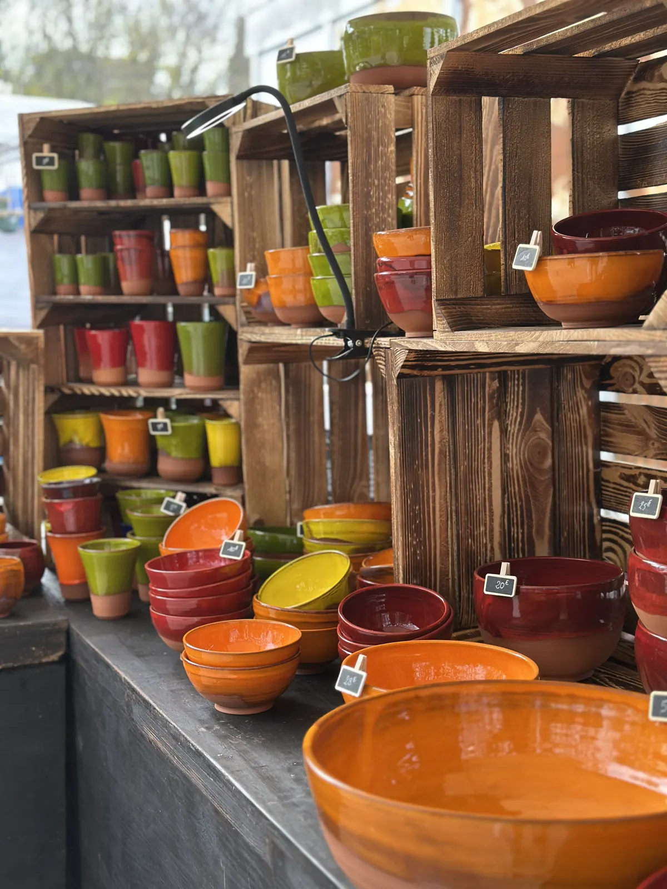

Poterie artisanale à Saint-Jean-de-Cuculles
Des céramiques uniques, pour la table, la maison et le jardin.
Des poteries artisanales qui allient beauté et fonctionnalité, pour votre intérieur comme pour votre extérieur. J'allie techniques traditionnelles et designs modernes, afin que chaque pièce soit unique.
